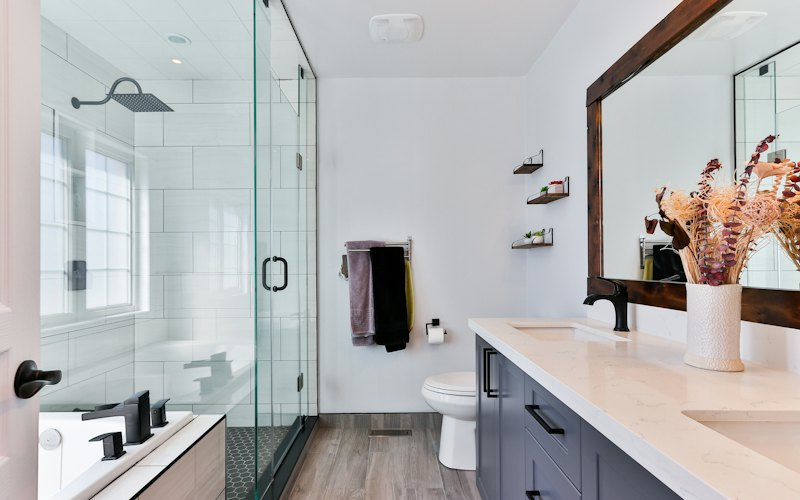
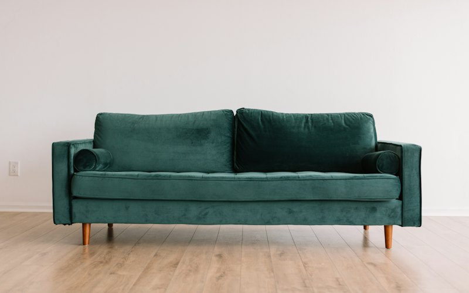
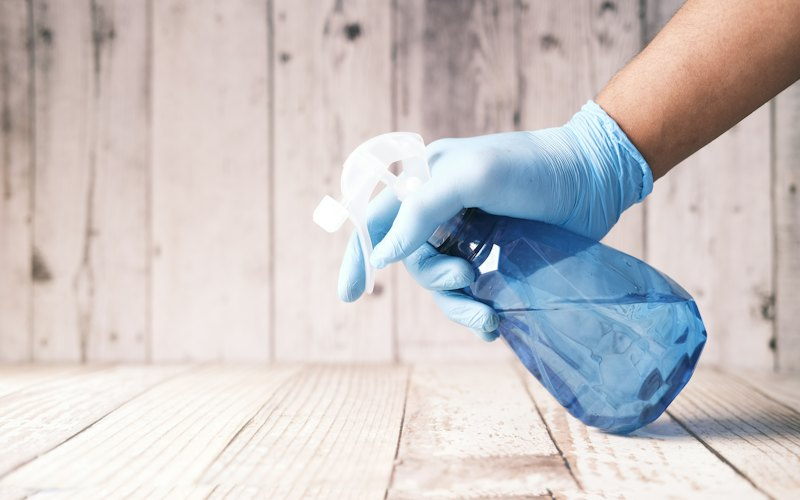
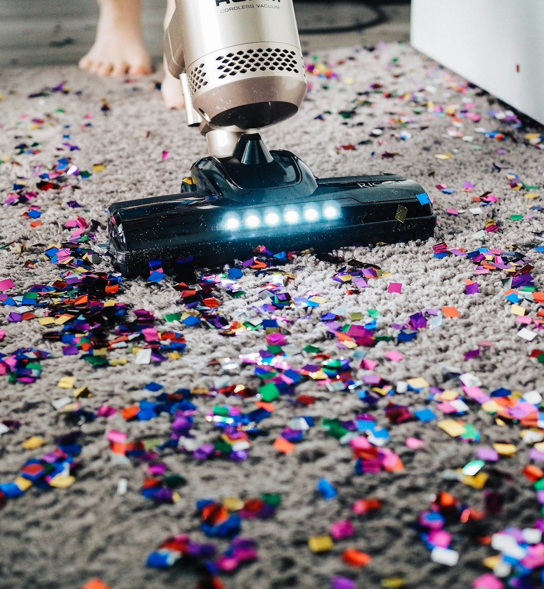
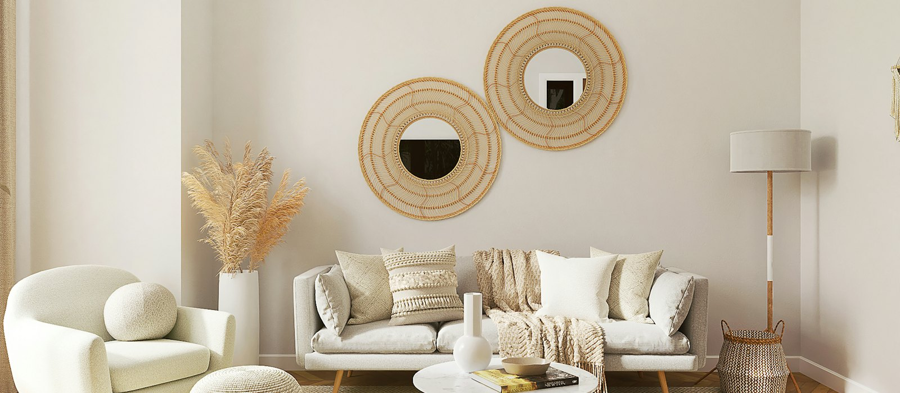

Jupiter & the Palm Beaches · Established 1988
Carpet, tile and upholstery, cleaned the careful way.
Suncoast Cleaning and Restoration cleans carpet, upholstery, tile and grout, drapery and fine area rugs for homes and businesses from Port St. Lucie to Boca Raton, with eco-friendly, allergy-free options and water removal when you need it fast.
Bonded, licensed and insured. Every estimate is free.
Carpet and Upholstery Cleaning in Jupiter and Palm Beaches
Trusted name with 23 years of carpet cleaning experience
A leader in carpet cleaning Jupiter and Palm Beach area, Suncoast provides superior carpet cleaning that keeps your family healthy. With a variety of eco-friendly, allergy free and green carpet cleaning alternatives, Suncoast is leading the way in environmentally friendly carpet cleaning solutions for your home.
If you are looking for superior carpet cleaning services around Port St. Lucie, Stuart, Boynton Beach, Boca Raton – including Jupiter, Palm Beach Gardens, West Palm Beach, Lake Worth, Indiantown and Wellington areas, then give us a call or fill out the form for a FREE ESTIMATE.
Suncoast Cleaning and Restoration in Jupiter and Palm Beach is one of the areas most trusted names for professional carpet, upholstery, tile and grout, drapery and fine area rug cleaning for over 23 years. The carpet cleaning professional teams of technicians at Suncoast are also water removal experts. The Suncoast carpet cleaning team can even take care of carpet pet stains and carpet odors as well as heavily soiled areas with their carpet cleaning and carpet disinfecting services.
Suncoast Cleaning and Restoration is bonded, licensed and insured, serving local area customers for over 23 years. Suncoast has been a part of the Better Business Bureau since 1993 and is also IICRC certified firm since 1998.
Our services
One call for every floor, fabric and surface in the house.
From a single stained sofa to a whole office, our technicians handle cleaning, pet stains and odors, heavily soiled areas, disinfecting and water removal. See all services.

Floors
Carpet, tile, grout and stone

Furniture & fabric
Upholstery, leather, rugs and drapes

Restoration & more
Water removal, ducts, whole homes and businesses

Carpet cleaning
Pet stains, odors and the high-traffic spots you gave up on.
Our technicians handle carpet pet stains and odors, heavily soiled areas and carpet disinfecting, and explain every step before they start. Prefer it gentler? Ask for our eco-friendly, allergy-free green cleaning. Trying it yourself first? Get That Stain Out! has Sun Coast's own instructions for 29 common stains.
- Pet stain and odor treatment
- Heavily soiled and high-traffic areas
- Carpet disinfecting
- Green, allergy-free options
Why Suncoast
The name neighbors have recommended for decades.
We've been cleaning South Florida homes since 1988. Here's what customers mention most.
01
No pressure, no upsell
Technicians explain how the cleaning works and quote what you asked for. Nothing more.
02
Healthier for your family
Eco-friendly, allergy-free and green cleaning options for homes with kids and pets.
03
Certified and accountable
An IICRC certified firm since 1998, BBB member since 1993, and bonded, licensed and insured.
04
Water removal experts
The same team that cleans your carpet knows how to get water out and dry things properly.
How it works
Clean floors in three easy steps.
Call, text or send the form
Reach us at (561) 747-8787. A photo of the stain or the room helps.
Get a free estimate
We'll tell you what we'll clean, how, and what it costs before we start.
We arrive on time and clean
Our technicians walk you through the process and leave your home looking and smelling fresh.
Here is what people have to say about us
What our customers say.
Letters and notes from customers across Palm Beach and Martin counties, in their own words.
First of all, I would like to say that the technicians, Matt and Kevin, were two of the nicest gentlemen I’ve had the pleasure of meeting! They were polite, thorough with explaining the process and didn’t pressure me with any extras or ‘up-sell’ me. Not only that, but when they finished everything looked great and smelled fresh. The protective footwear they gave us for free while the carpets dried was a nice touch, too! Thank you Sun Coast! I would recommend you to all my friends.Gerry L., Wellington, FL
“I would like to express my appreciation to you and your technicians. I had our drapes cleaned in April and was very satisfied with the cleaning. Today I had the carpets cleaned and they look like new again. Both times the technicians were very polite, friendly, and explained how the cleaning process works. I will refer anybody who might ask who I had clean my drapes and carpets without any doubt of the work. Again, please tell both sets of technicians what a great job they did and are very nice young men.”
“I had never used your company before, but a friend recommended that I give your company a try. I was very impressed by your technicians, Matt and Stan. They were clean and professional and did an amazing job on my floors. I could not be happier with the results, and will definitely use your company again. Thanks.”
“They did such a wonderful job! They got areas of my carpet clean that I didn’t even know was dirty! Everything came out looking brand new and smelling great. I will always use your company and give your information to all my friends! In fact, I went to go tell my friend how well you guys did, and she said, ‘You use Sun Coast? They are the only company I would ever use!’ So the word is spreading about how great your company is!”
“I wanted to thank you for sending Stan and Michael to clean our carpets yesterday at [place of business] in Delray Beach. They are both gentlemen and hard-working guys. Our carpets were filthy and stained; one area had blood stains from a recent accident. They were diligent about getting the stains out and they did! Our ceramic tile floor areas were also quite dirty, and they too almost look new. We will heartily recommend Sun Coast and these 2 technicians to our friends and colleagues. Thanks.”
“Great service, better than last year. It just keeps getting better!”
“Sun Coast,
“I was very impressed with your crew. They did a great job with my tile and had my leather couches looking brand new. Thanks again.”
“Dear Bruce,
“Sun Coast,
On 2/21 Suncoast arrived at the appointed time and for what I thought a very low price, cleaned my white sleeper sofa of accumulated water stains and cat body oils. I had considered purchasing a new sleeper, since I felt this piece could not be cleaned properly. Now I feel like I have a brand new piece of furniture-it’s amazing. Thanks so much.”
Service area
Based in Jupiter. Cleaning from Port St. Lucie to Boca Raton.
We serve homes and businesses across Palm Beach, Martin and St. Lucie counties. See every town we come to, or call or text and ask.
- Jupiter
- Palm Beach Gardens
- West Palm Beach
- Palm Beach
- Lake Worth
- Wellington
- Boynton Beach
- Delray Beach
- Boca Raton
- Stuart
- Jensen Beach
- Port St. Lucie
- Indiantown

Ready for floors that look new again?
Call or text for a free estimate. Tell us what needs cleaning and we'll take it from there.